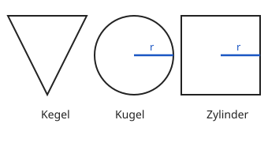

Die Kugel nach Archimedes
Mit einem KI-Tutor lernen
Ein KI-Tutor erklärt dir diese Seite und hilft dir bei den Aufgaben. Wähl deinen Assistenten:
Mit Claude öffnen Mit ChatGPT öffnen Mit Mistral Vibe öffnen
Du nutzt dein eigenes Konto beim Anbieter. Der Assistent ist kein Angebot von lernapps.net: lernapps liefert nur Inhalte und Aufgaben. Die Wahl gilt für alle Seiten, nur auf diesem Gerät.
Drei Körper, ein Radius
Wenn du wissen willst, wie viel in eine Kugel passt oder wie viel Material ihre Oberfläche braucht, hilft ein Vergleich mit Kegel und Zylinder. Archimedes hat ihn vor über 2000 Jahren gefunden.
Ein Kegel, eine Kugel und ein Zylinder haben alle denselben Radius r. Kegel und Zylinder sind so hoch wie die Kugel dick ist, also 2 · r. Die Kugel passt genau in den Zylinder.

© CC0-1.0Kegel, Kugel und Zylinder mit gleichem Radius und gleicher Höhe 2 · r.
Aufgabe
Lösung
Etwa ein Drittel.
Die Kugel berührt den Zylinder rundum und füllt mehr als ein Drittel.
Etwa die Hälfte.
Das ist zu wenig. Die Kugel füllt etwas mehr als die Hälfte des Zylinders.
Etwa zwei Drittel. richtige Antwort
Genau zwei Drittel. Das hat Archimedes herausgefunden, und du rechnest es gleich nach.
Fast alles.
In den Ecken des Zylinders oben und unten bleibt viel Platz. Es ist deutlich weniger als alles.
Die Kugel füllt zwei Drittel des Zylinders. Wie man darauf kommt, zeigt der nächste Abschnitt.
Archimedes' Vergleich
Wenn du das Volumen einer Kugel ausrechnen willst, hilft ein Vergleich: Kegel und Kugel zusammen füllen den Zylinder.
Archimedes fand: Das Volumen der Kugel ist so groß wie der Zylinder minus der Kegel. Mit den Formeln für Zylinder und Kegel kannst du die Rechnung nachvollziehen. Der Kegel fasst ein Drittel des Zylinders, also .
Für die Kugel bleibt der Rest übrig. Das Verhältnis von Kegel, Kugel und Zylinder ist 1 zu 2 zu 3. Dieses Ergebnis nimmst du hier als gegeben. Die Begründung dafür führen wir hier nicht aus.
Auch die Oberfläche geht auf Archimedes zurück. Sie ist so groß wie der Mantel des Zylinders um die Kugel. Das nimmst du hier als gegeben. Der Mantel ist 2 · π · r mal 2 · r.
- Kugel (Formeln)
Für die Kugel mit dem Radius gilt und . Die Oberfläche ist das Vierfache der Fläche eines Kreises mit demselben Radius.
Eine Kugel mit r = 6 cm
Wenn du die Formeln an einer Kugel prüfen willst, rechne sie für r = 6 cm.
Radius 6 cm
Volumen 904,32 cm³, Oberfläche 452,16 cm². Das Volumen wächst mit r³, die Oberfläche mit r².
Aufgaben
Aufgabe
Drei Beispielaufgaben, jede mit ihrer Lösung:
Aufgabe Nr. 1
Eine Kugel hat den Radius r = 6 cm. Berechne ihr Volumen mit π ≈ 3,14 und runde auf zwei Stellen nach dem Komma.
Tipp
Rechne erst r³ = r · r · r, dann mal 4 · π, dann durch 3.
Lösung
Richtige Antwort: 904,32 cm³ (erlaubte Abweichung: 0,01 cm³)
Aufgabe Nr. 2
Eine Kugel hat den Radius r = 8 cm. Berechne ihr Volumen mit π ≈ 3,14 und runde auf zwei Stellen nach dem Komma.
Tipp
Rechne erst r³ = r · r · r, dann mal 4 · π, dann durch 3.
Lösung
Richtige Antwort: 2143,57 cm³ (erlaubte Abweichung: 0,01 cm³)
Aufgabe Nr. 3
Eine Kugel hat den Radius r = 12 cm. Berechne ihr Volumen mit π ≈ 3,14 und runde auf zwei Stellen nach dem Komma.
Tipp
Rechne erst r³ = r · r · r, dann mal 4 · π, dann durch 3.
Lösung
Richtige Antwort: 7234,56 cm³ (erlaubte Abweichung: 0,01 cm³)
Aufgabe
Drei Beispielaufgaben, jede mit ihrer Lösung:
Aufgabe Nr. 1
Eine Kugel hat den Radius r = 9 cm. Berechne ihre Oberfläche mit π ≈ 3,14.
Tipp
Die Oberfläche der Kugel ist das Vierfache der Kreisfläche π · r².
Lösung
Richtige Antwort: 1017,36 cm²
Aufgabe Nr. 2
Eine Kugel hat den Radius r = 11 cm. Berechne ihre Oberfläche mit π ≈ 3,14.
Tipp
Die Oberfläche der Kugel ist das Vierfache der Kreisfläche π · r².
Lösung
Richtige Antwort: 1519,76 cm²
Aufgabe Nr. 3
Eine Kugel hat den Radius r = 6 cm. Berechne ihre Oberfläche mit π ≈ 3,14.
Tipp
Die Oberfläche der Kugel ist das Vierfache der Kreisfläche π · r².
Lösung
Richtige Antwort: 452,16 cm²
Aufgabe
Lösung
Richtige Antwort: 131,88 cm³ (erlaubte Abweichung: 0,01 cm³)
Kegel: ein Drittel mal 3,14 mal 3² mal 8 = 75,36. Halbkugel: die Hälfte der Kugel, also zwei Drittel mal 3,14 mal 3³ = 56,52. Zusammen 75,36 + 56,52 = 131,88 cm³.
Aufgabe
Lösung
1 : 2 : 3 richtige Antwort
Kegel: zwei Drittel mal π mal r³, Kugel: vier Drittel mal π mal r³, Zylinder: zwei mal π mal r³. Mit Drittel gerechnet sind das 2 : 4 : 6, also 1 : 2 : 3.
1 : 3 : 3
Die Kugel fasst nicht so viel wie der Zylinder. Sie liegt im Zylinder und lässt Platz in den Ecken.
1 : 2 : 4
Der Zylinder ist genau Kegel plus Kugel, also 1 + 2 = 3 Teile.
Kegel und Kugel zusammen füllen den Zylinder: 1 + 2 = 3. Das war Archimedes' Entdeckung.
Aufgabe
Lösung
Es wird doppelt so groß.
Das gilt für eine Länge wie den Umfang. Das Volumen enthält r³.
Es wird viermal so groß.
Viermal ist die Flächenvergrößerung (r²). Für das Volumen kommt noch ein Faktor 2 dazu.
Es wird achtmal so groß. richtige Antwort
V enthält r³. Mit 2 · r wird daraus 2³ · r³ = 8 · r³.
Das Volumen wächst mit der dritten Potenz des Radius: Doppelter Radius ergibt achtfaches Volumen.
Das kannst du jetzt: Du kannst Volumen und Oberfläche einer Kugel berechnen und kennst die Idee von Archimedes. Damit bist du am Ende der Körper und gehst zu Dreiecken und Vielecken über.
Fehler gefunden oder eine Idee für diese App?